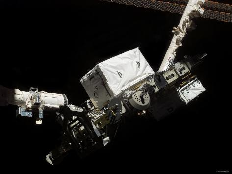

The Remote Manipulator System (RMS) also known as Canadarm , was a mechanical arm attached to the cargo bay . It could be used to grasp and manipulate payloads as well as serve as a mobile platform for Astranouts conducting and EVA . The RMS allowed for six degrees of freedom and had six joints located at three points along the arm . The original RMS could deploy or retrieve Payloads up to 23,000 kg which was later improved to 27,000 kg . The RMS was built by camdias Company Spar Aerospace and was controlled by Astranout inside the orbiters flight deck using their windows and closed circuit television .
